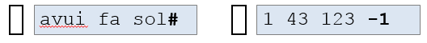

6.2 QUÈ ÉS UNA SEQÜÈNCIA
S'accedeix de manera seqüencial als seus elements. No es pot anar endavant ni endarrere ni tampoc anar indiscriminadament on es vulgui. Aixó fa que calgui una marca de fi, per poder saber on acaben. Es poden associar a els canals d'entrada sortida estàndars (pantalla i teclat) o a un fitxer i tenen permisos de lectura o escriptura, mai ambdós.
Exemples de sequencies
// Seqüència d’enters (positius)
2 34 23 34 76 12 4 6765 132 … 3 -1
//Seqüència de reals (majors que 0)
2.34 23 34.76 12.34 67.65 12 … 1.2 0
//Seqüència de caràcters
avui fa sol#
//Seqüència de dates
2 3 2023 3 12 2017 … 4 6 1999 0
Marques de fi
- Marca de fi lògica (explícita): Donada per un element distingit del mateix tipus que els de la seqüència, com ara els vists en l'exemple anterior.
Pot ser usada tant en les sequencies de teclat com les de fitxer.

- Marca de fi física (implícita): Donada per la marca de final de fitxer del sistema. Com es pot intuir, doncs, només es pot usar en fitxers.
Problemes de Seqüències
- Recorregut: cal tractar tots els elements de la seqüència fins a arribar a la marca de fi.
- Cerca: si trobem el que cerquem, parem (no cal arribar a la marca de fi), sinó, arribem al final.